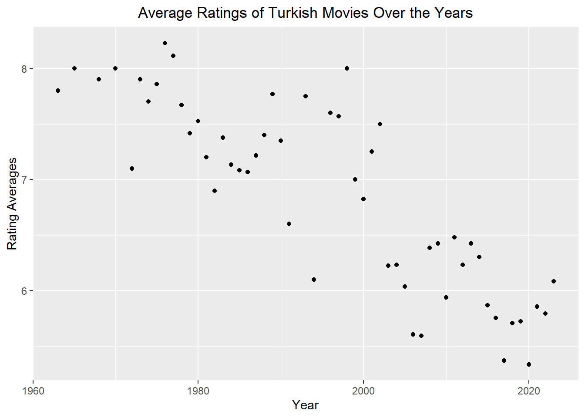
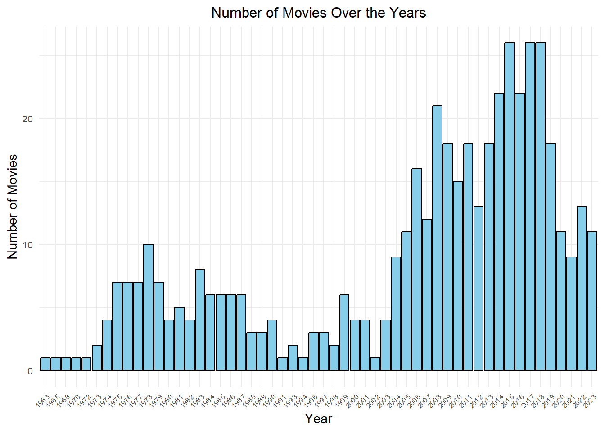
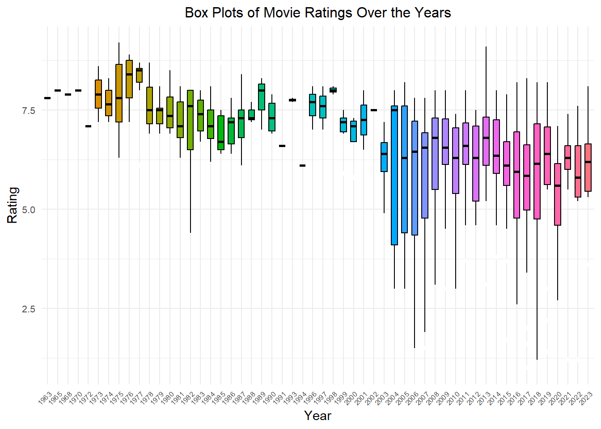
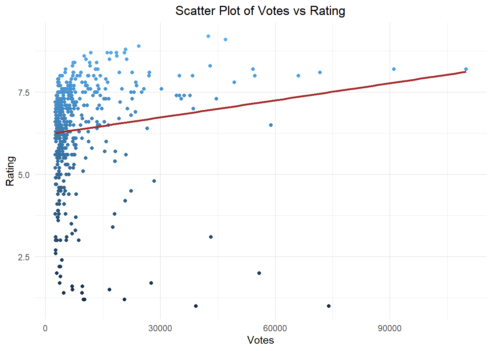
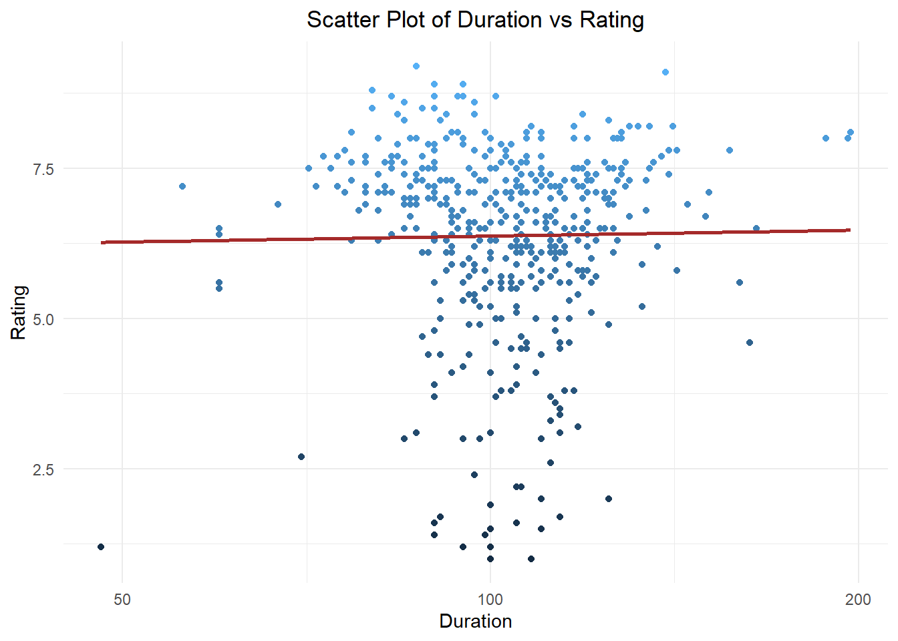

kable( movies %>%arrange(desc(rating)) %>%head(5),format ="html",caption ="Top 5 Movies based on Rating",col.names =c("Title", "Year", "Duration", "Rating", "Votes"))
Top 5 Movies based on Rating
Title
Year
Duration
Rating
Votes
Hababam Sinifi
1975
87
9.2
42513
CM101MMXI Fundamentals
2013
139
9.1
46997
Tosun Pasa
1976
90
8.9
24329
Hababam Sinifi Sinifta Kaldi
1975
95
8.9
24369
Süt Kardesler
1976
80
8.8
20889
Show the code
kable( movies %>%arrange(desc(rating)) %>%tail(5),format ="html",caption ="Bottom 5 Movies based on Rating",col.names =c("Title", "Year", "Duration", "Rating", "Votes"))
Bottom 5 Movies based on Rating
Title
Year
Duration
Rating
Votes
Cumali Ceber 2
2018
100
1.2
10230
Müjde
2022
48
1.2
9920
15/07 Safak Vakti
2021
95
1.2
20608
Cumali Ceber: Allah Seni Alsin
2017
100
1.0
39269
Reis
2017
108
1.0
73974
Obviously, I have watched most of the Yeşilçam movies, and I think that some of them hold a truly unique place in my heart, which I genuinely appreciate. While most people may consider the ratings of these movies to be overrated, I’m not entirely in disagreement with that idea. However, I also believe that there is no doubt these films deserve the recognition they have received. The last five films in the list, some of which I have never heard before, are less familiar to me.
3.2 Part B)
Here are my top three favorite movies from that list.
movies %>%group_by(year) %>%summarize(rating_averages =mean(rating)) %>%ggplot(aes(year, rating_averages)) +geom_point() +labs(x ="Year", y ="Rating Averages") +ggtitle("Average Ratings of Turkish Movies Over the Years") +theme(plot.title =element_text(hjust =0.5))

The plot clearly illustrates a decline in ratings over the years.
Show the code
ggplot(movies, aes(x =factor(year))) +geom_bar(fill ="skyblue", color ="black") +labs(x ="Year", y ="Number of Movies") +ggtitle("Number of Movies Over the Years") +theme_minimal() +theme(legend.position ="none",axis.text.x =element_text(angle =45, hjust =1, size =6),axis.text.y =element_text(size =8),plot.title =element_text(size =12, hjust =0.5))

Show the code
movies$year <-as.factor(movies$year)ggplot(movies, aes(x = year, y = rating, fill =factor(year))) +geom_boxplot(color ="black", outlier.color ="white", notch =FALSE, notchwidth =0.5, width =0.6) +labs(x ="Year", y ="Rating") +ggtitle("Box Plots of Movie Ratings Over the Years") +theme_minimal() +theme(legend.position ="none",axis.text.x =element_text(angle =45, hjust =1, size =6),axis.text.y =element_text(size =8),plot.title =element_text(size =12, hjust =0.5)) +scale_x_discrete(labels =function(x) substr(x, 1, 4))

Over the years, there has been a decline in the ratings, along with a noticeable and significant increase in the intervals between the ratings of the movies.
3.4 Part D)
Show the code
correlation <-cor(movies$votes, movies$rating)cat("Correlation between Votes and Ratings:", correlation, "\n")
Correlation between Votes and Ratings: 0.1308888
Show the code
ggplot(movies, aes(x = votes, y = rating, color = rating)) +geom_point() +geom_smooth(method ="lm", se =FALSE, color ="brown", formula = y ~ x) +labs(x ="Votes", y ="Rating") +ggtitle("Scatter Plot of Votes vs Rating") +theme_minimal() +theme(legend.position ="none") +theme(plot.title =element_text(hjust =0.5))

The correlation between votes and ratings is weak, as shown by the coefficient of 0.1306267. This is also supported by the visual representation in the plot.
3.5 Part E)
Show the code
correlation_duration_rating <-cor(movies$duration, movies$rating)cat("Correlation between Duration and Ratings:", correlation_duration_rating, "\n")
Correlation between Duration and Ratings: 0.03356006
Show the code
ggplot(movies, aes(x = duration, y = rating, color = rating)) +geom_point() +geom_smooth(method ="lm", formula = y ~ x, se =FALSE, color ="brown", show.legend =FALSE) +labs(x ="Duration", y ="Rating") +ggtitle("Scatter Plot of Duration vs Rating") +theme_minimal() +theme(legend.position ="none") +scale_x_log10() +theme(plot.title =element_text(hjust =0.5))

There is no correlation between votes and ratings, as indicated by the correlation coefficient of 0.03343216. This is also visible in the following plot.
4 Turkish Movies in IMDB Top 1000
Show the code
url_top <-"https://m.imdb.com/search/title/?title_type=feature&groups=top_1000&country_of_origin=TR&count=250"title_top <-read_html(url_top) %>%html_elements(".ipc-title__text") %>%html_text()title_top <-tail(head(title_top,-1),-1)title_top <-str_split(title_top, " ", n=2)title_top <-unlist(lapply(title_top, function(x) {x[2]}))year_top <-read_html(url_top) %>%html_elements(".dli-title-metadata-item:nth-child(1)") %>%html_text() %>%as.numeric()movies_top <-bind_cols(title_top = title_top, year_top = year_top)colnames(movies_top) <-c("title", "year")kable( movies_top,format ="html",caption ="Turkish Movies That are in the Top 1000 Movies on IMDb",col.names =c("Title", "Year"))
Turkish Movies That are in the Top 1000 Movies on IMDb
Title
Year
Yedinci Kogustaki Mucize
2019
Kis Uykusu
2014
Nefes: Vatan Sagolsun
2009
Ayla: The Daughter of War
2017
Babam ve Oglum
2005
Ahlat Agaci
2018
Bir Zamanlar Anadolu'da
2011
Eskiya
1996
G.O.R.A.
2004
Vizontele
2001
Her Sey Çok Güzel Olacak
1998
Show the code
movies <- movies %>%mutate(year =as.character(year))movies_top <- movies_top %>%mutate(year =as.character(year))movies_top_join <- movies %>%inner_join(movies_top, by =c("title", "year")) %>%arrange(desc(rating))kable( movies_top_join,format ="html",caption ="Turkish Movies That are in the Top 1000 Movies on IMDb Full Table",col.names =c("Title", "Year", "Duration", "Rating", "Votes"))
Turkish Movies That are in the Top 1000 Movies on IMDb Full Table
Title
Year
Duration
Rating
Votes
Ayla: The Daughter of War
2017
125
8.3
42994
Yedinci Kogustaki Mucize
2019
132
8.2
54178
Babam ve Oglum
2005
108
8.2
91039
Eskiya
1996
128
8.1
71704
Her Sey Çok Güzel Olacak
1998
107
8.1
27122
Kis Uykusu
2014
196
8.0
54651
Ahlat Agaci
2018
188
8.0
27020
Nefes: Vatan Sagolsun
2009
128
8.0
35024
G.O.R.A.
2004
127
8.0
66032
Vizontele
2001
110
8.0
38404
Bir Zamanlar Anadolu'da
2011
157
7.8
49371
Show the code
movies <-arrange(movies, desc(rating))kable(head(movies, 11),format ="html",caption ="Turkish Movies that are in the Top 11 based on Ratings",col.names =c("Title", "Year", "Duration", "Rating", "Votes"))
Turkish Movies that are in the Top 11 based on Ratings
Title
Year
Duration
Rating
Votes
Hababam Sinifi
1975
87
9.2
42513
CM101MMXI Fundamentals
2013
139
9.1
46997
Tosun Pasa
1976
90
8.9
24329
Hababam Sinifi Sinifta Kaldi
1975
95
8.9
24369
Süt Kardesler
1976
80
8.8
20889
Saban Oglu Saban
1977
90
8.7
18534
Zügürt Aga
1985
101
8.7
16137
Neseli Günler
1978
95
8.7
11807
Kibar Feyzo
1978
83
8.7
17126
Hababam Sinifi Uyaniyor
1976
94
8.7
20640
Canim Kardesim
1973
85
8.6
10097
As we can see from the table, these are not the same as the first 11 highest-rated movies in our initial data frame. Upon comparing both tables, the first thing we notice is the years of release for the movies, particularly the absence of older films in the TOP 1000 IMDB list. It is highly likely that they consider only movies released after a certain year.
---title: "Assignment 2"format: html: toc: true toc-depth: 6 toc-title: Contents toc-location: left toc-expand: 5 smooth-scroll: true anchor-sections: true include-after-body: abbrv_toc.html number-sections: true code-fold: true code-tools: true---My second assignment consists of four parts.## Importing Urls from the IMDB {toc-text="st Section"}```{r}#| code-fold: true#| code-summary: "Show the code"url1 <-"https://m.imdb.com/search/title/?title_type=feature&release_date=2010-01-01,2023-12-31&num_votes=2500,&country_of_origin=TR&count=250"url2 <-"https://m.imdb.com/search/title/?title_type=feature&release_date=,2009-12-31&num_votes=2500,&country_of_origin=TR&count=250"```## Creating the Movies Data Frame {toc-text="nd Section"}```{r}#| code-fold: true#| code-summary: "Show the code"suppressPackageStartupMessages(library(tidyverse))library(tidyverse)detach("package:readr", unload =TRUE)library(rvest)library(stringr)library(knitr)library(lubridate)title1 <-read_html(url1) %>%html_elements(".ipc-title__text") %>%html_text()title1 <-tail(head(title1,-1),-1)title1 <-str_split(title1, " ", n=2)title1 <-unlist(lapply(title1, function(x) {x[2]}))title2 <-read_html(url2) %>%html_elements(".ipc-title__text") %>%html_text()title2 <-tail(head(title2,-1),-1)title2 <-str_split(title2, " ", n=2)title2 <-unlist(lapply(title2, function(x) {x[2]}))title <-c(title1, title2)year1 <-read_html(url1) %>%html_elements(".dli-title-metadata-item:nth-child(1)") %>%html_text() %>%as.numeric()year2 <-read_html(url2) %>%html_elements(".dli-title-metadata-item:nth-child(1)") %>%html_text() %>%as.numeric()year <-c(year1, year2)convert_time <-function(time_str) { hours <-0 minutes <-0if (grepl("h", time_str)) { time_components <-strsplit(time_str, "h|m")[[1]]if (length(time_components) >=1) { hours <-as.numeric(time_components[1]) }if (length(time_components) >=2) { minutes <-as.numeric(time_components[2]) } } else { minutes <-as.numeric(gsub("m", "", time_str)) } total_minutes <- hours *60+ minutesreturn(total_minutes)}duration1 <-read_html(url1) %>%html_elements(".dli-title-metadata-item:nth-child(2)") %>%html_text()duration1 <-unlist(lapply(duration1, convert_time))duration2 <-read_html(url2) %>%html_elements(".dli-title-metadata-item:nth-child(2)") %>%html_text()duration2 <-unlist(lapply(duration2, convert_time))duration <-c(duration1, duration2)rating1 <-read_html(url1) %>%html_elements(".ratingGroup--imdb-rating") %>%html_text()rating1 <-str_extract(rating1, "\\d+\\.\\d+") %>%as.numeric()rating2 <-read_html(url2) %>%html_elements(".ratingGroup--imdb-rating") %>%html_text()rating2 <-str_extract(rating2, "\\d+\\.\\d+") %>%as.numeric()rating <-c(rating1, rating2)votes1 <-read_html(url1) %>%html_elements(".kRnqtn") %>%html_text()votes1 <-gsub("\\D", "", votes1) %>%as.numeric()votes2 <-read_html(url2) %>%html_elements(".kRnqtn") %>%html_text()votes2 <-gsub("\\D", "", votes2) %>%as.numeric()votes <-c(votes1, votes2)rm(title1, title2, year1, year2, duration1, duration2, rating1, rating2, votes1, votes2) movies <-bind_cols(title = title,year = year,duration = duration,rating = rating,votes = votes)colnames(movies) <-c("title", "year", "duration", "rating", "votes")kable(head(movies, 15),format ="html",caption ="Turkish Movies from IMDb",col.names =c("Title", "Year", "Duration", "Rating", "Votes"))```## Top 5 and Bottom 5 Movies based on Ratings {toc-text="rd Section"}### Part A)```{r}#| code-fold: true#| code-summary: "Show the code"kable( movies %>%arrange(desc(rating)) %>%head(5),format ="html",caption ="Top 5 Movies based on Rating",col.names =c("Title", "Year", "Duration", "Rating", "Votes"))kable( movies %>%arrange(desc(rating)) %>%tail(5),format ="html",caption ="Bottom 5 Movies based on Rating",col.names =c("Title", "Year", "Duration", "Rating", "Votes"))```::: {style="text-align: justify"}Obviously, I have watched most of the Yeşilçam movies, and I think that some of them hold a truly unique place in my heart, which I genuinely appreciate. While most people may consider the ratings of these movies to be overrated, I'm not entirely in disagreement with that idea. However, I also believe that there is no doubt these films deserve the recognition they have received. The last five films in the list, some of which I have never heard before, are less familiar to me.:::### Part B)Here are my top three favorite movies from that list.```{r}#| code-fold: true#| code-summary: "Show the code"kable( movies %>%filter(title =="Müslüm"),format ="html",caption ="Number 1",col.names =c("Title", "Year", "Duration", "Rating", "Votes"))``````{r}#| code-fold: true#| code-summary: "Show the code"kable( movies %>%filter(title =="Yedinci Kogustaki Mucize"),format ="html",caption ="Number 2",col.names =c("Title", "Year", "Duration", "Rating", "Votes"))``````{r}#| code-fold: true#| code-summary: "Show the code"kable( movies %>%filter(title =="Dag II"),format ="html",caption ="Number 3",col.names =c("Title", "Year", "Duration", "Rating", "Votes"))```### Part C)```{r}#| code-fold: true#| code-summary: "Show the code"movies %>%group_by(year) %>%summarize(rating_averages =mean(rating)) %>%ggplot(aes(year, rating_averages)) +geom_point() +labs(x ="Year", y ="Rating Averages") +ggtitle("Average Ratings of Turkish Movies Over the Years") +theme(plot.title =element_text(hjust =0.5))```The plot clearly illustrates a **decline** in ratings over the years.```{r}#| code-fold: true#| code-summary: "Show the code"ggplot(movies, aes(x =factor(year))) +geom_bar(fill ="skyblue", color ="black") +labs(x ="Year", y ="Number of Movies") +ggtitle("Number of Movies Over the Years") +theme_minimal() +theme(legend.position ="none",axis.text.x =element_text(angle =45, hjust =1, size =6),axis.text.y =element_text(size =8),plot.title =element_text(size =12, hjust =0.5))``````{r}#| code-fold: true#| code-summary: "Show the code"movies$year <-as.factor(movies$year)ggplot(movies, aes(x = year, y = rating, fill =factor(year))) +geom_boxplot(color ="black", outlier.color ="white", notch =FALSE, notchwidth =0.5, width =0.6) +labs(x ="Year", y ="Rating") +ggtitle("Box Plots of Movie Ratings Over the Years") +theme_minimal() +theme(legend.position ="none",axis.text.x =element_text(angle =45, hjust =1, size =6),axis.text.y =element_text(size =8),plot.title =element_text(size =12, hjust =0.5)) +scale_x_discrete(labels =function(x) substr(x, 1, 4))```Over the years, there has been a decline in the ratings, along with a noticeable and significant increase in the intervals between the ratings of the movies.### Part D)```{r}#| code-fold: true#| code-summary: "Show the code"correlation <-cor(movies$votes, movies$rating)cat("Correlation between Votes and Ratings:", correlation, "\n")ggplot(movies, aes(x = votes, y = rating, color = rating)) +geom_point() +geom_smooth(method ="lm", se =FALSE, color ="brown", formula = y ~ x) +labs(x ="Votes", y ="Rating") +ggtitle("Scatter Plot of Votes vs Rating") +theme_minimal() +theme(legend.position ="none") +theme(plot.title =element_text(hjust =0.5))```The correlation between votes and ratings is weak, as shown by the coefficient of 0.1306267. This is also supported by the visual representation in the plot.### Part E)```{r}#| code-fold: true#| code-summary: "Show the code"correlation_duration_rating <-cor(movies$duration, movies$rating)cat("Correlation between Duration and Ratings:", correlation_duration_rating, "\n")ggplot(movies, aes(x = duration, y = rating, color = rating)) +geom_point() +geom_smooth(method ="lm", formula = y ~ x, se =FALSE, color ="brown", show.legend =FALSE) +labs(x ="Duration", y ="Rating") +ggtitle("Scatter Plot of Duration vs Rating") +theme_minimal() +theme(legend.position ="none") +scale_x_log10() +theme(plot.title =element_text(hjust =0.5))```There is no correlation between votes and ratings, as indicated by the correlation coefficient of 0.03343216. This is also visible in the following plot.## Turkish Movies in IMDB Top 1000 {toc-text="th Section"}```{r}#| code-fold: true#| code-summary: "Show the code"url_top <-"https://m.imdb.com/search/title/?title_type=feature&groups=top_1000&country_of_origin=TR&count=250"title_top <-read_html(url_top) %>%html_elements(".ipc-title__text") %>%html_text()title_top <-tail(head(title_top,-1),-1)title_top <-str_split(title_top, " ", n=2)title_top <-unlist(lapply(title_top, function(x) {x[2]}))year_top <-read_html(url_top) %>%html_elements(".dli-title-metadata-item:nth-child(1)") %>%html_text() %>%as.numeric()movies_top <-bind_cols(title_top = title_top, year_top = year_top)colnames(movies_top) <-c("title", "year")kable( movies_top,format ="html",caption ="Turkish Movies That are in the Top 1000 Movies on IMDb",col.names =c("Title", "Year"))``````{r}#| code-fold: true#| code-summary: "Show the code"movies <- movies %>%mutate(year =as.character(year))movies_top <- movies_top %>%mutate(year =as.character(year))movies_top_join <- movies %>%inner_join(movies_top, by =c("title", "year")) %>%arrange(desc(rating))kable( movies_top_join,format ="html",caption ="Turkish Movies That are in the Top 1000 Movies on IMDb Full Table",col.names =c("Title", "Year", "Duration", "Rating", "Votes"))``````{r}#| code-fold: true#| code-summary: "Show the code"movies <-arrange(movies, desc(rating))kable(head(movies, 11),format ="html",caption ="Turkish Movies that are in the Top 11 based on Ratings",col.names =c("Title", "Year", "Duration", "Rating", "Votes"))```::: {style="text-align: justify"}As we can see from the table, these are not the same as the first 11 highest-rated movies in our initial data frame. Upon comparing both tables, the first thing we notice is the years of release for the movies, particularly the absence of older films in the TOP 1000 IMDB list. It is highly likely that they consider only movies released after a certain year.:::